Study of form factors and observables in Bc− → Ds*− ℓ+ℓ− and Bc− → Ds*− νν̄ decays
U. Dey and S. Nandi · JHEP 10 (2026) 016
Heavy-flavor physics
Postdoctoral Fellow
Indian Institute of Technology Gandhinagar
I study how B mesons decay. I combine lattice QCD inputs, perturbative QCD, and heavy-quark symmetries to predict decay rates and angular observables that test the Standard Model.
Research
I use exclusive and inclusive B-meson decays to test lepton flavor universality and study the weak couplings of heavy quarks. Much of my published work focuses on the Bc meson and its decays to charmonium and open-charm states.
I use lattice QCD results to constrain meson distribution amplitudes in perturbative QCD. I combine those inputs with heavy-quark symmetry to determine how the form factors vary with the momentum transfer q2.
These form factors let me predict decay rates, lepton flavor ratios, and angular observables such as forward–backward asymmetries and polarization fractions. The predictions provide benchmarks for future measurements of charged-current and rare decays.
In parallel, I study inclusive semileptonic B decays using heavy-quark effective theory and the operator product expansion. This work addresses the difference between inclusive and exclusive determinations of |Vcb|.
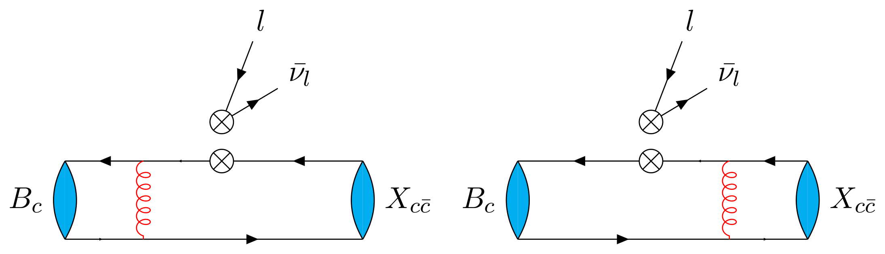
Leading-order semileptonic decay diagrams
Figure 1 · JHEP 07 (2025) 144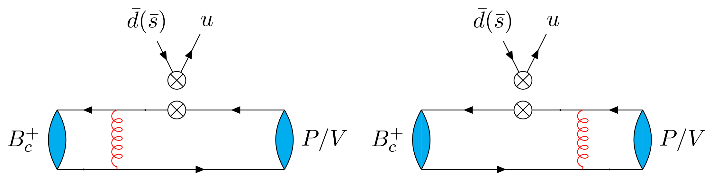
Factorizable diagrams for non-leptonic decays
Figure 9 · JHEP 07 (2025) 144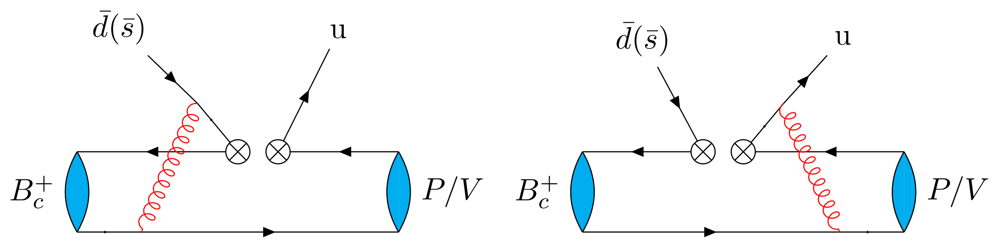
Non-factorizable diagrams for non-leptonic decays
Figure 10 · JHEP 07 (2025) 144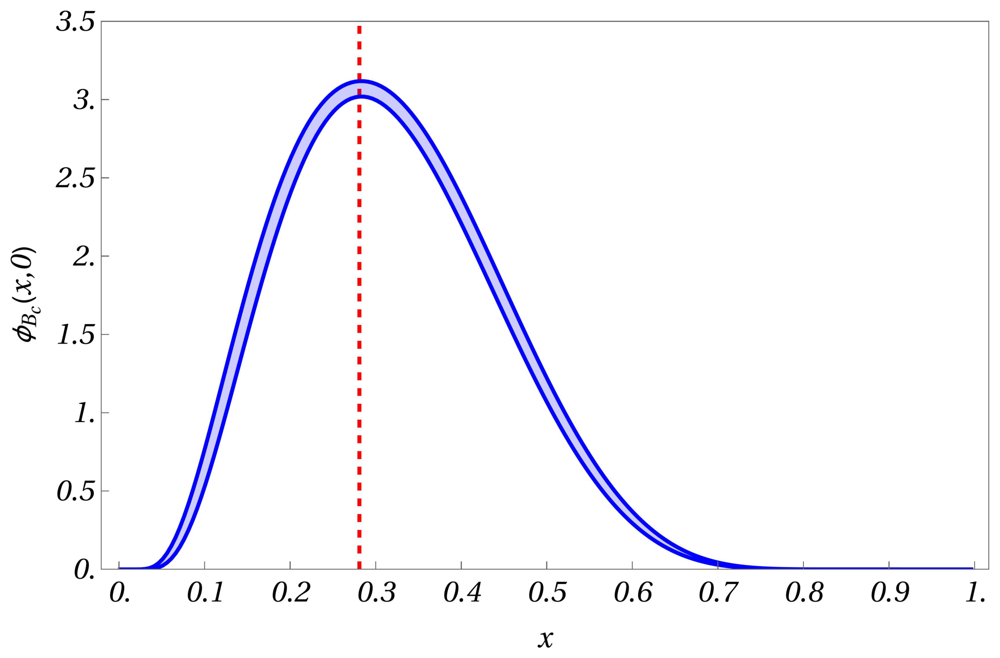
The Bc distribution amplitude
Figure 2 · JHEP 07 (2025) 144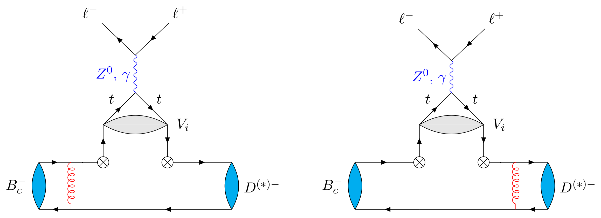
Penguin diagrams for rare Bc decays
Figure 2 · JHEP 04 (2026) 104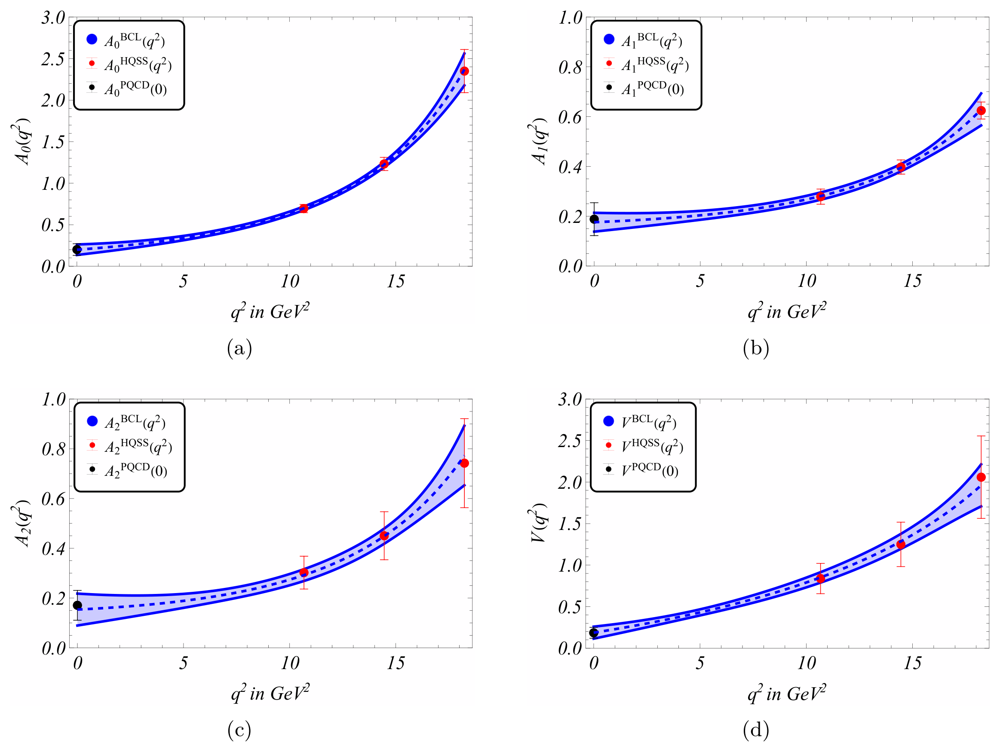
BCL q2 distributions for Bc → D* vector and axial-vector form factors
Figure 8 · JHEP 04 (2026) 104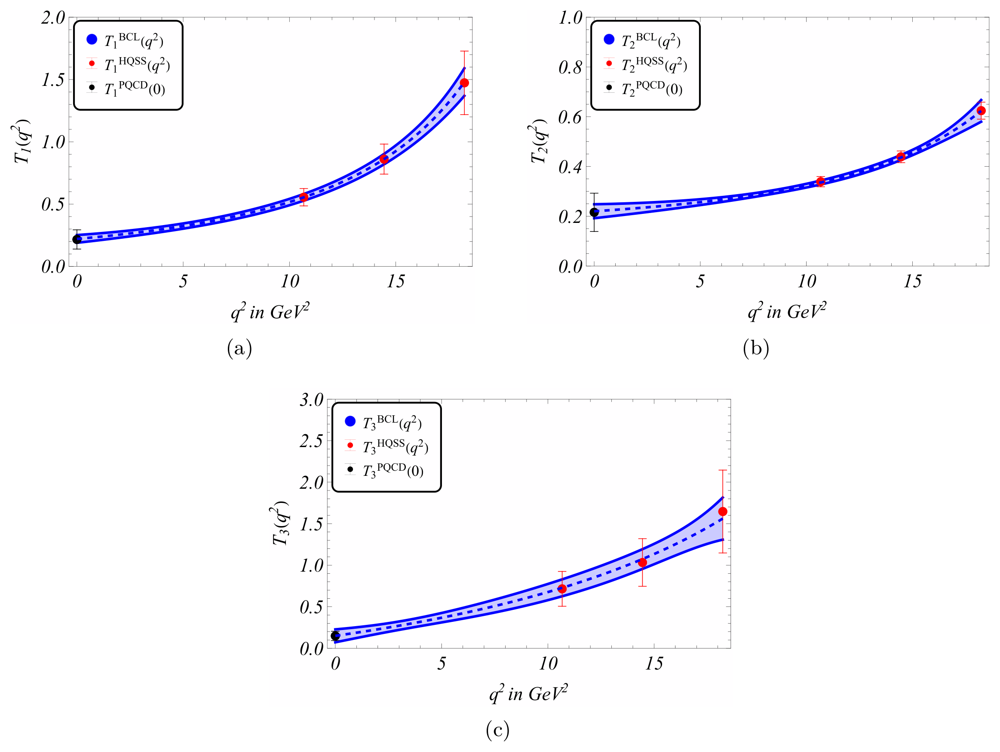
BCL q2 distributions for Bc → D* tensor form factors
Figure 9 · JHEP 04 (2026) 104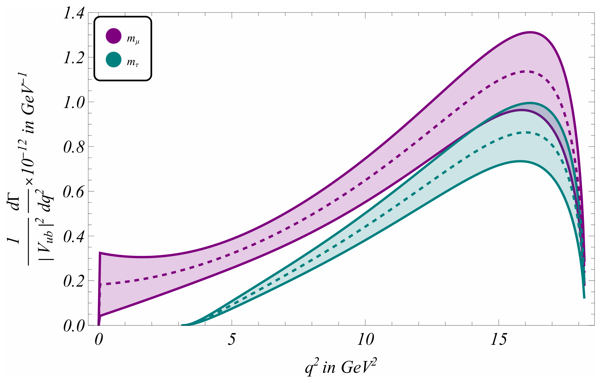
Semileptonic differential decay width for Bc → D*
Figure 10 · JHEP 04 (2026) 104
Differential branching fraction for Bc → D* dilepton decays
Figure 12 · JHEP 04 (2026) 104
Forward–backward asymmetry in Bc → D* dilepton decays
Figure 13 · JHEP 04 (2026) 104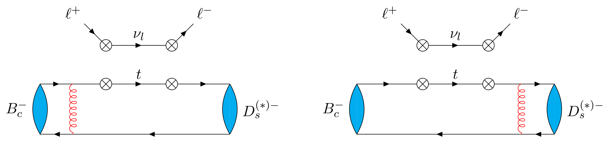
Box diagrams for rare Bc → Ds(*) decays
Figure 2 · JHEP 10 (2026) 016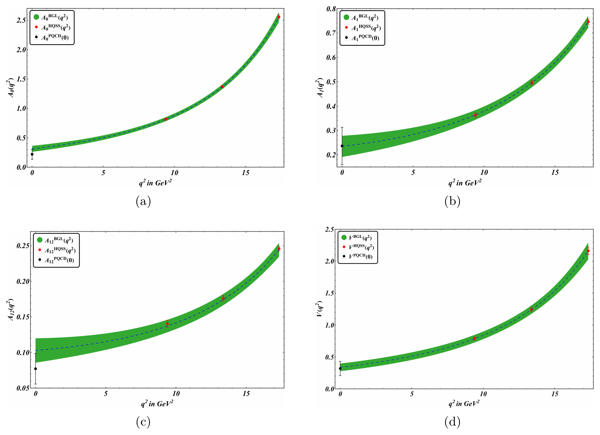
BGL q2 distributions for Bc → Ds* vector and axial-vector form factors
Figure 6 · JHEP 10 (2026) 016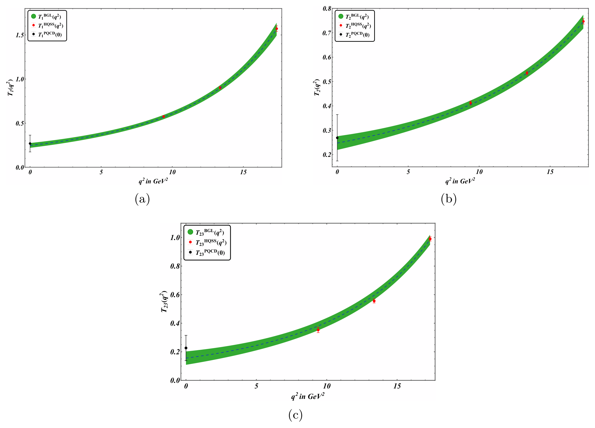
BGL q2 distributions for Bc → Ds* tensor form factors
Figure 7 · JHEP 10 (2026) 016
Differential branching fraction for Bc → Ds* dilepton decays
Figure 9 · JHEP 10 (2026) 016
Forward–backward asymmetry in Bc → Ds* dilepton decays
Figure 10 · JHEP 10 (2026) 016
Longitudinal polarization in Bc → Ds* dilepton decays
Figure 10 · JHEP 10 (2026) 016My published work, ongoing projects, and future directions in heavy-flavor physics.
Journal articles
U. Dey and S. Nandi · JHEP 10 (2026) 016
U. Dey and S. Nandi · JHEP 04 (2026) 104
U. Dey and S. Nandi · JHEP 07 (2025) 144
–
Indian Institute of Technology Gandhinagar
–
Banaras Hindu University, Varanasi
–
Institute of Physics, Bhubaneswar
–
Indian Institute of Technology, Guwahati
For questions about my research, collaborations, and seminar invitations.